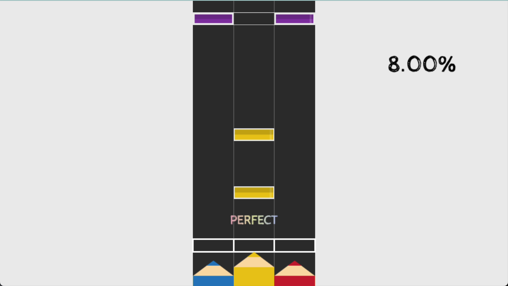
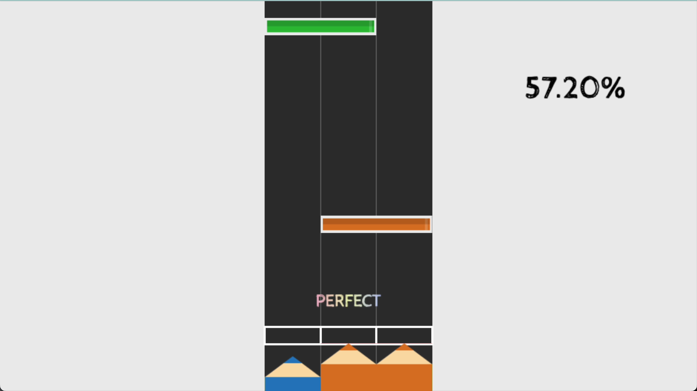

使用した言語・ツール
JavaScript（PixiJs）
HTML
GitHub Pages（公開用）

ブラウザで動くリズムゲームです。３つのレーンに流れてくるノーツをD（左）、F,J（中央）、K（右）で叩きます。

２レーンにまたがって流れてくる同時押しは、レーンの２色を混ぜ合わせた色になっています。
現在はPCでの操作のみ対応しています。今後はタッチデバイスへの対応、演出の強化、ゲームループの実装と楽曲や譜面のボリュームアップを行う予定です。